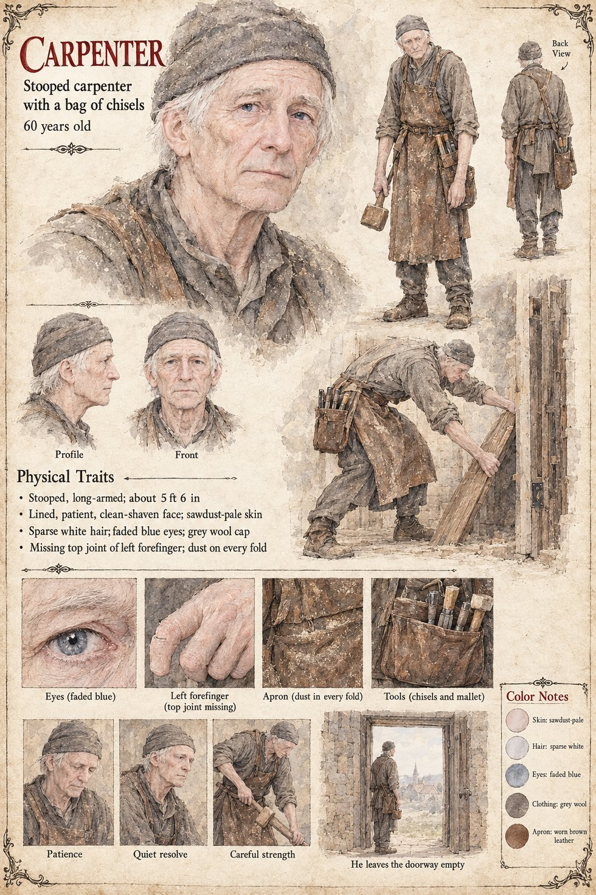

Carpenter
Stooped carpenter with a bag of chisels · unnamed · 60 years old by his sheet
A stooped, long-armed old carpenter in a grey wool cap, sawdust-pale and patient, with the top joint of his left forefinger missing, a leather apron with dust in every fold and a pouch of chisels and a mallet at his belt. His sheet gives him three expressions, Patience, Quiet resolve and Careful strength, and one caption, He leaves the doorway empty, under a scene in which he stands in a stone doorway looking out over a town and a church spire; his large panel draws him bending to lift a plank against a heavy door. The publication notes give him two doors and an empty frame. In Chapter 12 he takes the door off the royal bedchamber (Theudebald's page has it stood in the corridor, where it stays for eleven days); in Chapter 18 he lifts the Guildhall door from its hinges and stands in the empty doorway, hanging nothing in it. The sheet's caption, He leaves the doorway empty, is that last act; it names no king, door or hinge.
Written from the sheet, from what the other Case 4181 pages already say, and from the character notes in the case's publication-prep file; the manuscript itself was not to hand. His age of 60, stooped long-armed build of about 5 ft 6 in, lined patient clean-shaven face, sparse white hair, faded blue eyes and sawdust-pale skin are the sheet's own, as are the worn brown leather apron and grey wool clothes.
Appears In

Related Subjects


Related Records

In the bedchamber of the dying King Theudebald lies on four pillows with a sword on the coverlet between his hands and his daughter Adalgund's, the window open on the river; the door has been taken off its hinges by a carpenter and stands in the corridor, and in the empty frame the Duke, Waldo, sits on a stool looking at his brother while the Chancellor Ricbert and the Hierarch Rothari wait at the corridor's end.